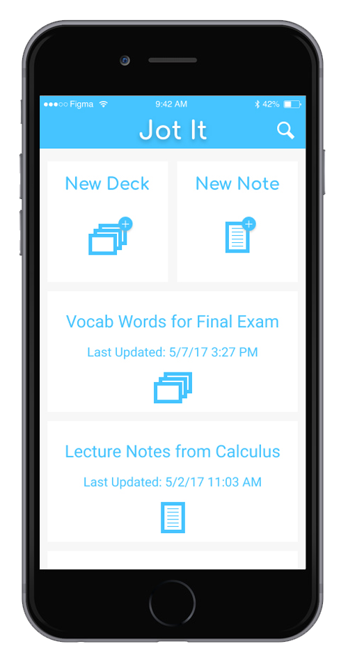
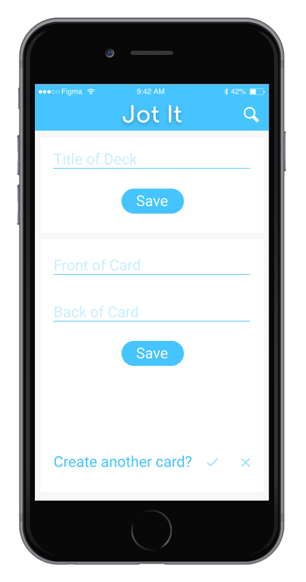
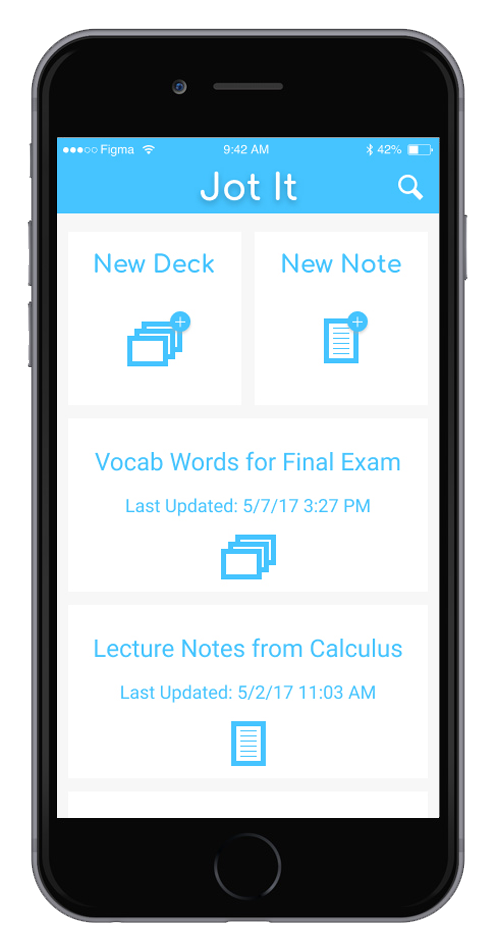
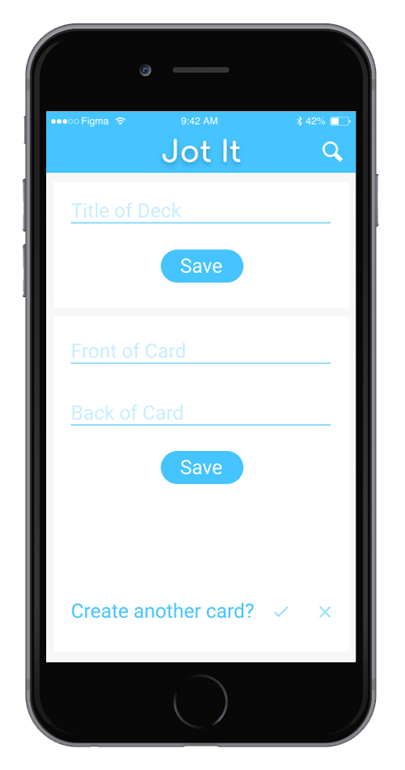
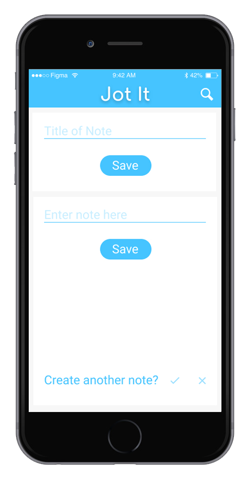
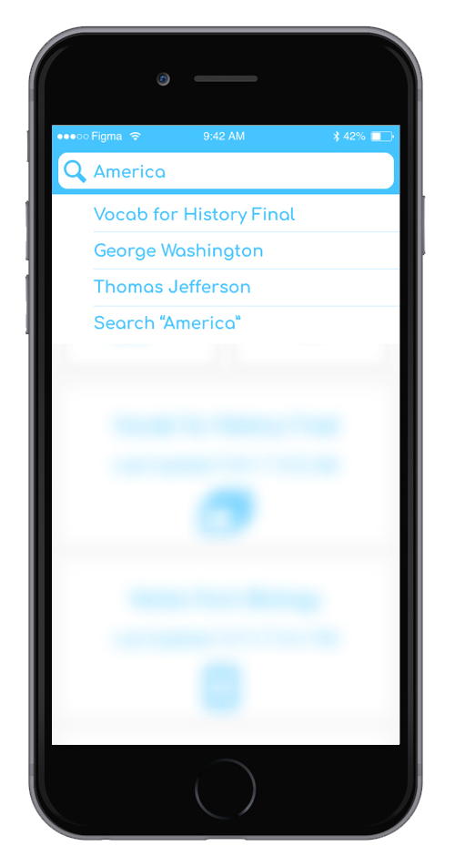

Jot It - Mobile UI Project
Jot It is a personal project I designed to provide students a quick method to create flash cards or write notes.
The project was designed using Figma.
The Purpose
I designed Jot It so that students would be able to have a quick and efficient way to study.
From personal experience, I know what a pain it is to hand write so many flash cards, and would have really found this application a time saving alternative.
 




The Flow
The flow of the application is simple and clean.
The user will be able to create flash cards swiftly with very little navigating to keep user work flow efficient.
 You can see the complete prototype here.
Back to Home Next Project